Vertex
All your services in one window
Messengers, mail and web apps side by side. Each service runs in its own isolated session, so several accounts of the same service stay signed in at once.
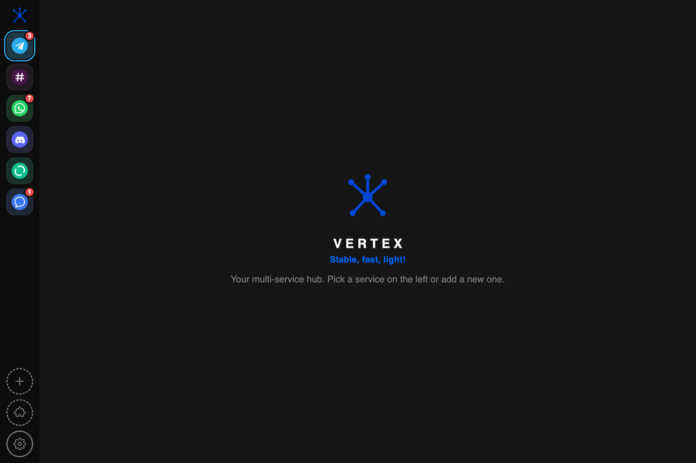
What It Does
One window instead of eight
Vertex owns the frame — the rail, the title bar, notifications and settings. Inside, each service renders itself exactly as it does in a browser.
Isolated sessions
Every service gets its own storage partition. Two work accounts and a private one in the same messenger, all signed in at once, none of them aware of the others.
System notifications
Banners come from macOS itself, so dismissing one does not drag you into the app. An in-app bubble takes over if the system turns them down.
78 services ready
Telegram, Slack, WhatsApp, Discord, Gmail, Notion, Figma, Linear and more from the catalog — or paste any URL and it becomes a service.
Sleeps when idle
Inactive services are throttled and put to sleep after a few minutes, so a dozen open services do not cost you a dozen services' worth of CPU.
Extensions
Content blocking, cookie banners, proxy. The registry is data only — plain JSON, no executable code is fetched or run.
Yours to colour
Eleven palettes, each in a dark and a light version, plus twelve colourways for the app icon. Pick a look and the whole frame follows.
Services
Bundled icons for the messengers you use
Twelve messengers ship with their own icon in one consistent style, so the rail reads cleanly instead of mixing cut-out logos with white boxes. Everything else uses the site favicon.
Appearance
Twelve icons, twenty-two themes
The mark is a vertex — the point where edges meet, which is what the app does with your services. Pick the colourway that suits your dock.
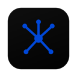
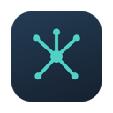
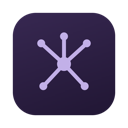
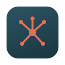
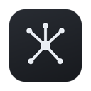
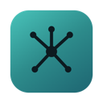
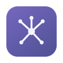
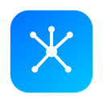
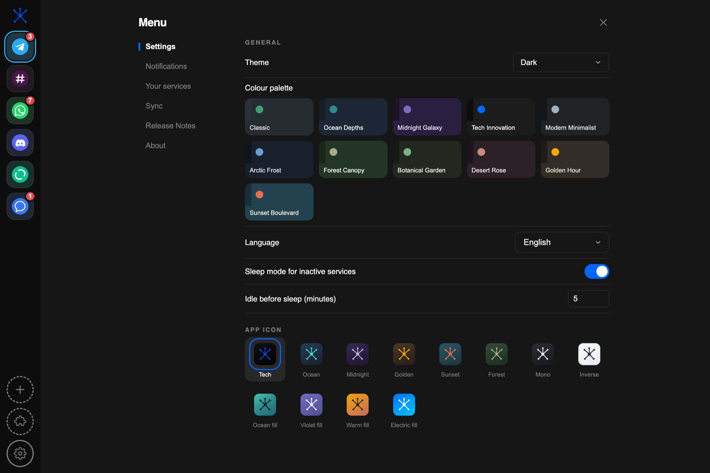
Install
Getting it running
Download the DMG, drag Vertex into Applications. One extra step the first time — please read it, otherwise the app looks broken when it is not.
macOS will block the first launch
Vertex is signed ad-hoc, not with an Apple Developer ID — that certificate costs $99 a year and this is a free app. macOS therefore greets the first launch with “Vertex is damaged and can’t be opened”. The download is fine; macOS simply refuses to vouch for it.
Right-click Vertex.app and choose Open, then confirm. Or clear the quarantine flag once:
xattr -dr com.apple.quarantine /Applications/Vertex.app
After that it launches normally. Only the very first run is affected.
- Platform macOS 12 Monterey or newer
- Architecture Apple Silicon (arm64)
- Download DMG, about 122 MB
- Price free
- Source closed